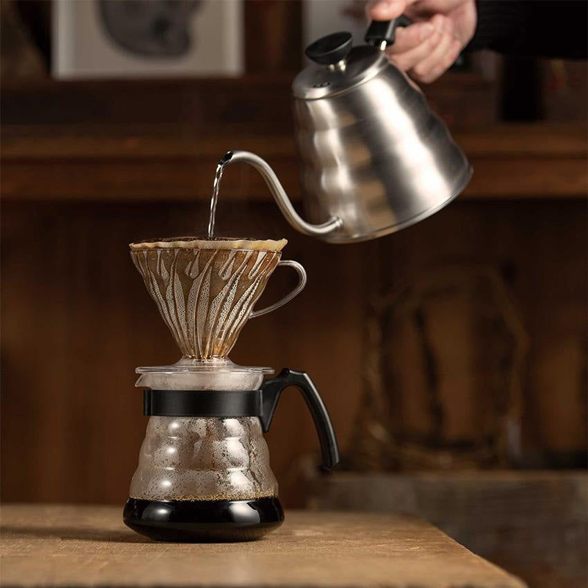
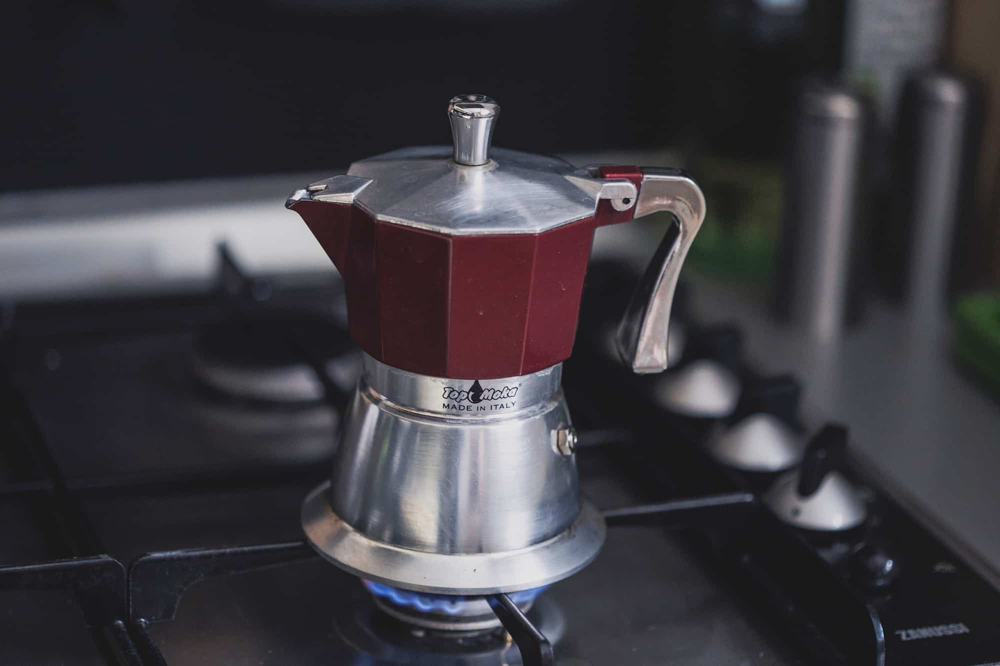
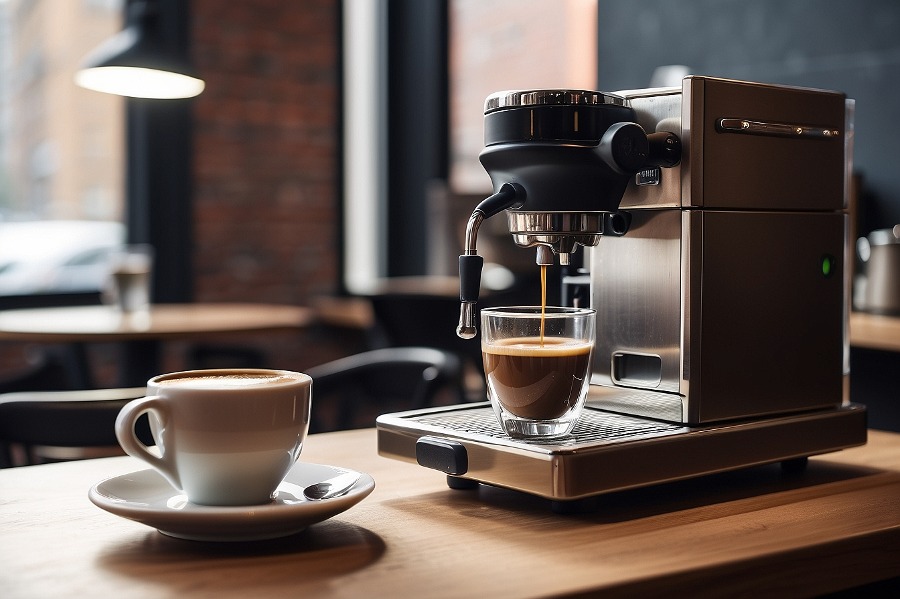

Prensa francesa
El café en prensa francesa se prepara por inmersión total con molido grueso durante unos 4 minutos, usando un filtro metálico que deja pasar aceites naturales. El resultado es una taza de cuerpo completo, textura densa y sabor intenso, ideal para resaltar notas chocolatosas y nuez. Perfecto para quienes buscan una experiencia rica y aromática sin complicaciones.

V60 / Pour-over
Método de goteo con filtro de papel que ofrece una taza limpia, aromática y muy clara en sabores. Resalta acidez brillante y dulzor equilibrado con cuerpo ligero a medio; se recomienda molido medio y vertidos en pulsos para mayor precisión.

Moka
Café de hornalla con presión moderada que extrae una bebida intensa y concentrada, de cuerpo medio-alto y notas tostadas. Funciona bien con molido medio-fino y calor controlado para evitar amargor; ideal para quienes buscan potencia sin llegar al espresso.

Espresso
Extracción rápida y a alta presión que concentra sabor, cuerpo denso y una capa de crema sedosa. Usa molido muy fino y resultado corto e intenso, perfecto para disfrutar solo o como base de bebidas con leche.
